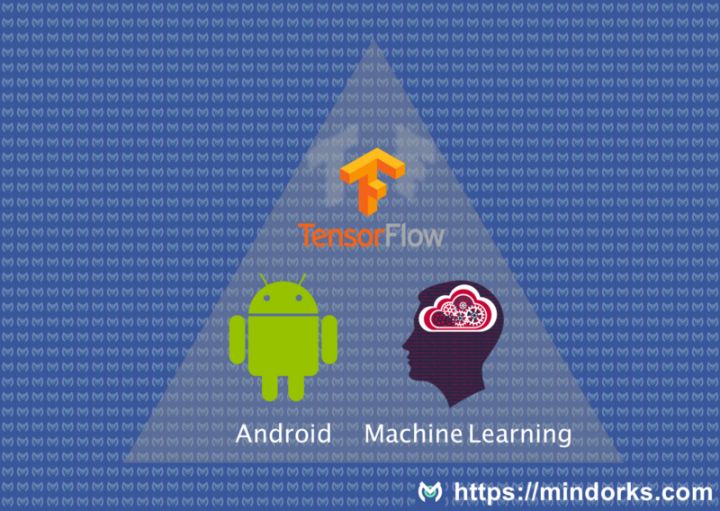
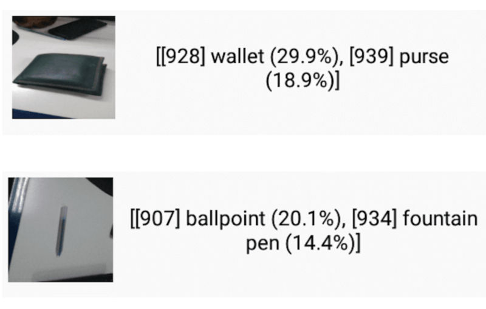

【翻译】Android + TensorFlow机器学习示例
Table of Contents
原文地址: https://blog.mindorks.com/android-tensorflow-machine-learning-example-ff0e9b2654cc#.yjxydsasw

机器学习: 将TensorFlow整合到Android中
众所周知, 谷歌开源了一个名为 TensorFlow 的库, 可以在Android中使用, 用来实现机器学习. TensorFlow是谷歌提供的的具有机器智能的开源库.
我在网上找了很久都没找到一个可以简单编译Android版TensorFlow的方法或示例. 翻阅了很多资料之后, 我自己编译成功了. 所以我决定把过程写下来, 以节省他人的时间.
本文主要面向熟悉机器学习以及知道如何为机器学习构建模型 (例如本文示例中使用到了预训模型). 未来我打算写一系列关于机器学习的文章, 这样大家可以学习如何构建机器学习模型.
Android库编译过程
有一些需要实现知道的要点:
- TensorFlow的核心代码是用C++写的.
- 为了编译库, 需要使用JNI来调用C++函数, 例如loadModel, getPredictions等.
- 所以需要一个 .so 文件以及jar文件. jar中包含了可以调用C++接口的API. 这样就可以直接通过Java api去做事情.
- 必须有一个预训模型文件和标签文件用于分类.
我们会构建如下的物体识别.

编译jar包和 .so 文件
下载tensorflow:
git clone --recurse-submodules https://github.com/tensorflow/tensorflow.git
注:–recurse-submodules 用于获取子模块
- 去 这里 下载NDK.
- 下载Android SDK或使用 Android Studio的SDK(需要提供一个路径).
- 安装Bazel. 它是TensorFlow的编译系统.
编辑TensorFlow代码库目录下的WORKSPACE文件. 该文件的内容大致如下:
# Uncomment and update the paths in these entries to build the Android demo. #android_sdk_repository( # name = "androidsdk", # api_level = 23, # build_tools_version = "25.0.1", # # Replace with path to Android SDK on your system # path = "<PATH_TO_SDK>", #) # #android_ndk_repository( # name="androidndk", # path="<PATH_TO_NDK>", # api_level=14)
把你电脑中sdk和ndk的路径添加进去, 例如:
android_sdk_repository( name = "androidsdk", api_level = 23, build_tools_version = "25.0.1", # Replace with path to Android SDK on your system path = "/Users/amitshekhar/Library/Android/sdk/", ) android_ndk_repository( name="androidndk", path="/Users/amitshekhar/Downloads/android-ndk-r13/", api_level=14)使用下面命令编译 .so 文件(cpu改成你手机的架构)
bazel build -c opt //tensorflow/contrib/android:libtensorflow_inference.so \ --crosstool_top=//external:android/crosstool \ --host_crosstool_top=@bazel_tools//tools/cpp:toolchain \ --cpu=armeabi-v7a
编译后的 .so 文件的位置:
bazel-bin/tensorflow/contrib/android/libtensorflow_inference.so
编译相应的jar包.
bazel build //tensorflow/contrib/android:android_tensorflow_inference_java
编译后的jar包目录:
bazel-bin/tensorflow/contrib/android/libandroid_tensorflow_inference_java.jar
OK, 目前位置, 我们已经有了 .so 文件和jar包, 可以在项目中使用他们了. 我在github上创建了一个可以运行的示例程序, 参见这里.
但是, 我们仍然需要预训模型和标签文件. 这上面的示例中, 我使用了谷歌的 预训模型, 该模型可以根据给出的图片识别出物体. 可以在这里 下载模型. 解压zip包, 我们即可获得imagenet_comp_graph_label_strings.txt(标签)和tensorflow_inception_graph.pb (预训模型).
接下来, 创建一个android工程,
- 将上面两个文件放入assets目录.
将编译好的jar包放入libs目录, 并添加依赖.
compile files('libs/libandroid_tensorflow_inference_java.jar')- 将 libtensorflow_inference.so 文件放入jniLibs/armeabi-v7a/目录.
然后我们就可以调用TensorFlow的Java接口了. Java API通过类 TensorFlowInferenceInterface 提供了所有需要的方法. 通过加载下载好的模型, 然后提供给他一个图片, 就可以 做预测了.
如果想看到完整的工作, 可以下载我的工程, 运行一下.